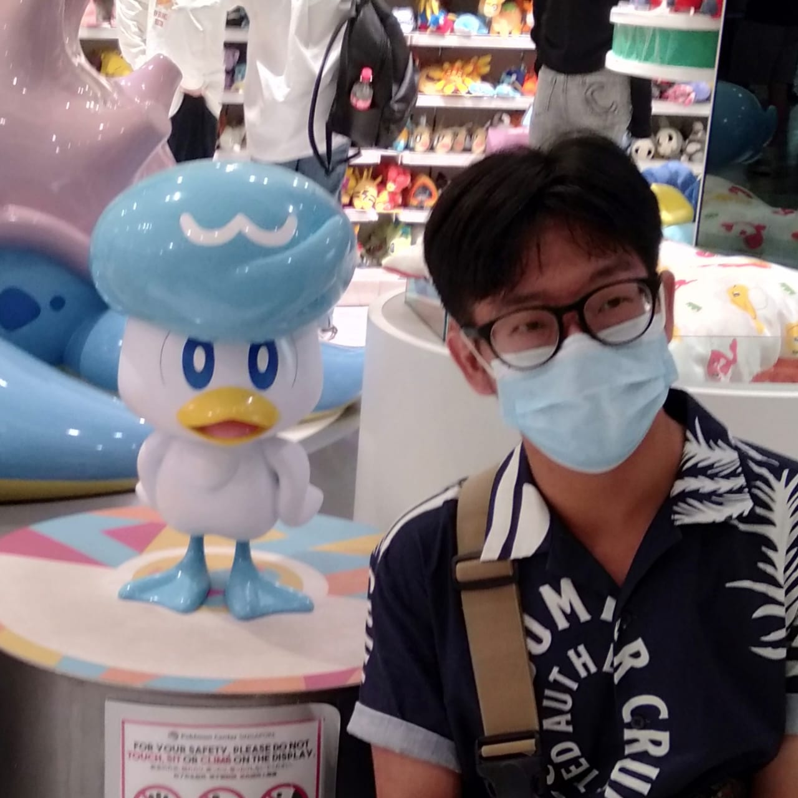
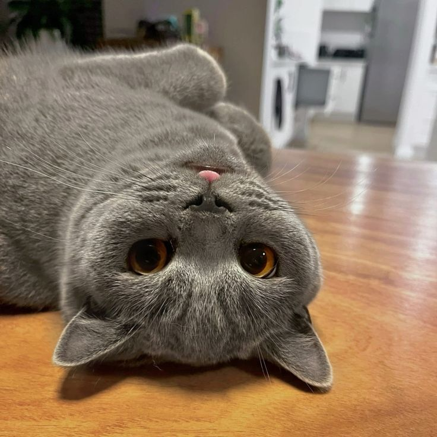
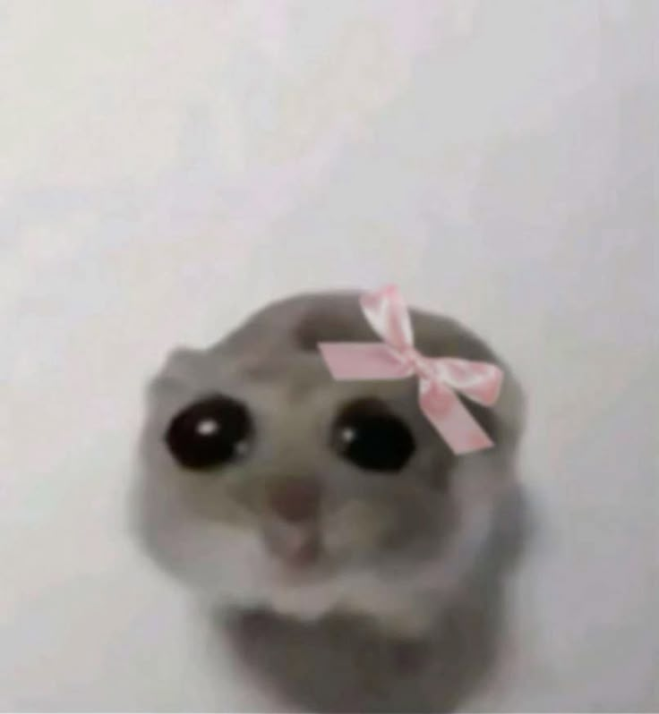

My Favorite Things
About Me
Name: Geady
Profession: College Student
Birth-date: 27th of November 2006
My Favorite Songs
-
Song 1 - HUNJUNG YEONSUH by WINTER Aespa
This song is calming and emotionally touching. I love Winter's vocals!
-
Song 2 - I Miss You by SOYOU
The vocals are powerful, and the lyrics really hit with a feeling of longing and warmth.
-
Song 3 - Please Don't Cry by DAVICHI
It has beautiful harmonies and is perfect for reflecting on deep memories.
My Favorite Games
-
Mobile Legends
I enjoy its fast-paced gameplay and the strategic teamwork with friends.

-
Valorant
I love and hate this game at the same time. I only enjoy playing it when I'm topfragging :>

My Favorite Animals
-
Dogs!
They're loyal, cheerful, and always make me smile—especially Corgis!
-
Cats!
I love their calm yet playful attitude. They're perfect cuddle buddies!
 -
Hamsters!
They're tiny and adorable—cutiesss!
